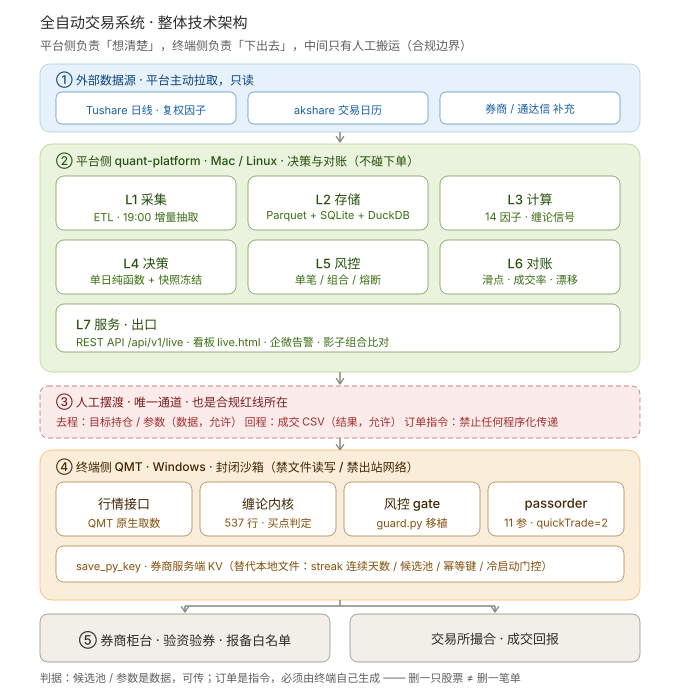
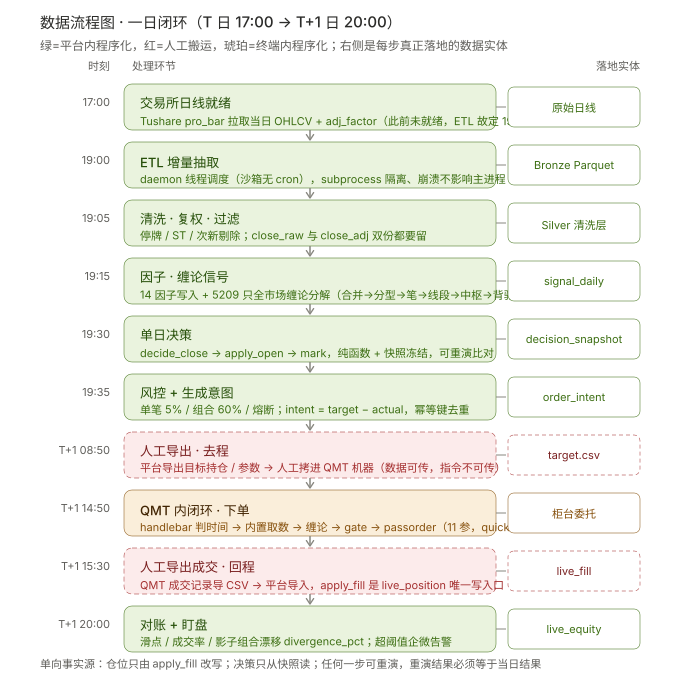
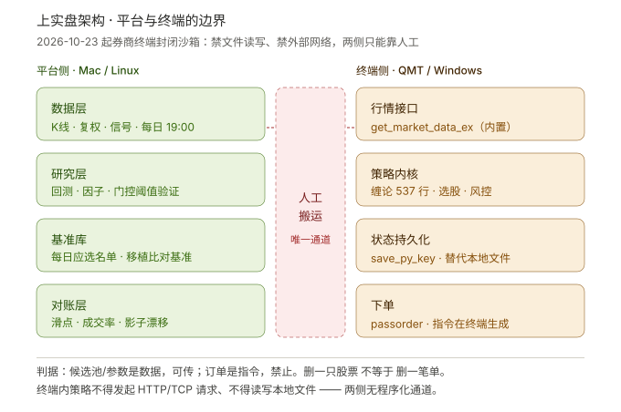
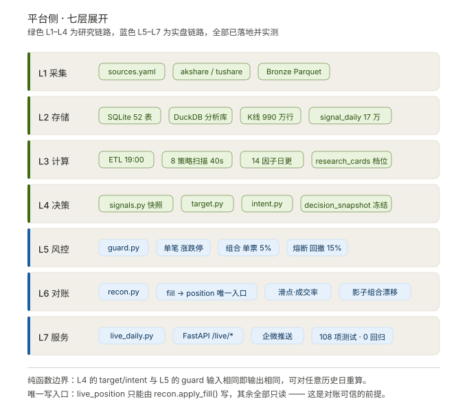
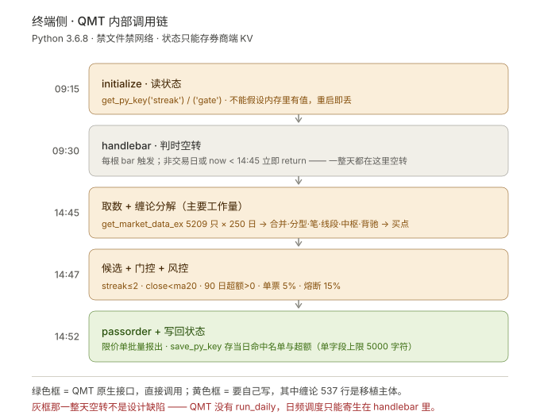

quant-platform · 生成于 2026-10-31 · 合规前提：平台侧决策，终端侧执行，人工摆渡为唯一通道
外部数据源 → 平台侧 L1–L7 → 人工摆渡 → 终端侧 QMT 沙箱 → 券商柜台 / 交易所

T 日 17:00 到 T+1 日 20:00，每步标注真正落地的数据实体；红框为人工搬运环节

终端封闭后两侧的职能切分与唯一通道

L0–L4 Medallion 分层与 ETL / API / 前端的对应关系

策略 → QMT 客户端 → 券商柜台 → 交易所 四段链路
